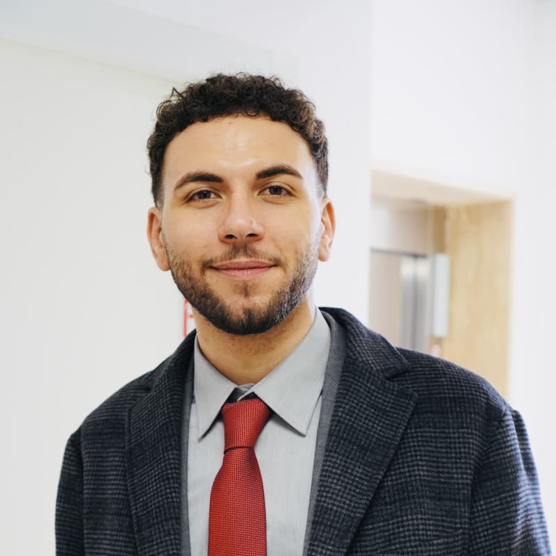
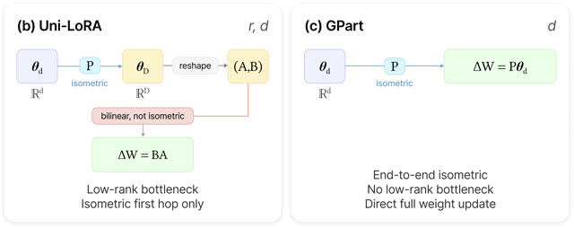

Senior AI Research Scientist
Project Leader, Samsung AI Center Warsaw
I am a Senior AI Research Scientist and Project Leader at the Samsung AI Center in Warsaw, Poland, where I am part of the Agentic Reasoning Lab. I lead research on parameter-efficient fine-tuning, agentic systems, reasoning, and hallucination mitigation for large language and vision-language models.
My work spans research design, empirical evaluation, patent filing, and product-facing prototypes. I am particularly interested in making large multimodal models more capable, efficient, and reliable.
I received my Ph.D. in Computer Science from Sapienza University of Rome in 2025, where I was part of the Perception and Intelligence Lab led by Prof. Fabio Galasso. Before Samsung, I conducted research at Panasonic North America, UC Berkeley BAIR, and ItalAI.
Outside of research, I enjoy spending time in nature, reading, photography, running, playing guitar, and working out.
Get in touch at paolomandica.p@gmail.com.
Updates
June 3, 2026 The code for GPart is now open source on SamsungLabs GitHub.
Research
-

-
-
Projects & Service
Open Source & Apps
Bare Habits — a minimalist habit tracker for iOS. Focus on what matters, one day at a time.reed — a tool for converting saved article pages into EPUBs, Markdown documents, and audiobooks.
Teaching
Teaching assistant for these Master's degree courses in Data Science at Sapienza University:
- Fundamentals of Data Science and Laboratory - Fall 2022
- Algorithmic Methods of Data Mining - Fall 2020
Academic Service
Reviewer for leading AI and computer vision conferences and journals:
- Neural Information Processing Systems (NeurIPS)
- European Conference on Computer Vision (ECCV)
- Empirical Methods in Natural Language Processing (EMNLP)
- International Conference on Image Analysis and Processing (ICIAP)
- IEEE Transactions on Circuits and Systems for Video Technology (TCSVT)
- IEEE Transactions on Image Processing (TIP)